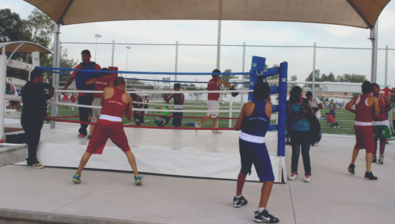
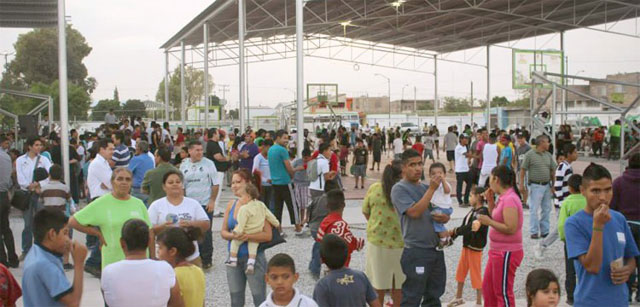
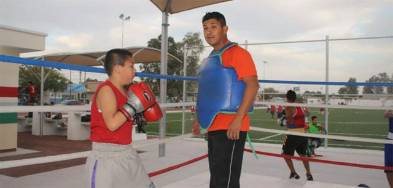
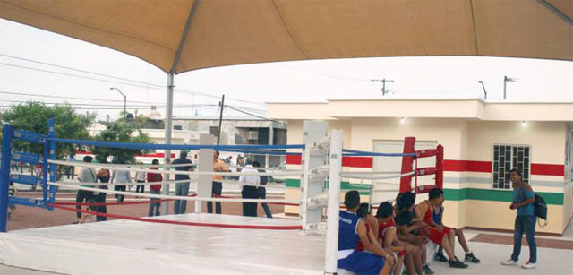

       <div class="pages navbar-through">
          <!-- Page, data-page contains page name-->
          <div data-page="guadalupev" class="page ">
            <!-- Scrollable page content-->
            <div class="page-content">
                <div class="cover-preview row">
                    
                </div>
                <div id="gcgpage-content" class="col-xs-12">
                    <h3 id="titulo-entrada">DEPORTIVA GUADALUPE VICTORIA</h3>
                    <div class="resumen-page">
                Seis millones  300 mil pesos se aplicaron a la construcción de la Unidad Deportiva Guadalupe Victoria, enclavada en la colonia del...
                    </div>
                   
                   
                    <div id="gcg-contenido">
                  <p>Seis millones  300 mil pesos se aplicaron a la construcción de la Unidad Deportiva Guadalupe Victoria, enclavada en la colonia del mismo nombre y cuyo espacio será aprovechado por miles de habitantes de ésta y otras siete colonias de ese sector de la ciudad.</p>
                      <p>La construcción de este espacio se hizo con recursos mezclados de los tres niveles de gobierno; la Comisión Nacional del Deporte aportó cinco millones, 560 mil pesos, en tanto que el Municipio invirtió una suma superior a los 700 mil pesos</p>
                           <p class="section-bold-title">PARA COMPLEMENTAR LA INVERSIÓN DE SEIS MILLONES 260 MIL PESOS.</p>
                     <div class="row">
                           
                       </div>
                     <p>La gestión realizada por el alcalde, José Miguel Campillo Carrete, con el titular de Conade, el gomezpalatino Jesús Mena, rindió frutos de forma inmediata, pues se obtuvo el terreno y la dependencia ofreció los recursos para complementar la obra.</p>
                      <div class="row">
                           
                       </div>
                     <p class="section-bold-title">“ESTE SECTOR ESTÁ DENTRO DE UNO DE LOS POLÍGONOS DE RIESGO, Y LAS INSTALACIONES SERVIRÁN PARA RESCATAR EL TEJIDO SOCIAL”.— VÍCTOR MÁRQUEZ, DIRECTOR DE DEPORTE</p>
                     <div class="row">
                           
                       </div>
                     
                    
                     
                      
                        
                    </div>
                    <footer class="share-page">
                        <span class="lblShare">Compartir:</span>
                        <ul>
                           <a href="#" id="shareMail"><li></li></a>
                           <a href="#" id="shareFB"><li></li></a>
                           <a href="#" id="shareTwitter"><li></li></a>
                           <a href="#" id="shareWhats"><li></li></a>
                        </ul>
                    </footer>
                </div> 
                 
               
            </div>
          </div>
        </div>
        
       